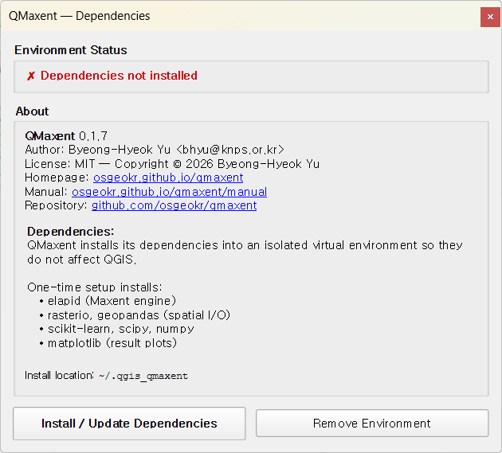
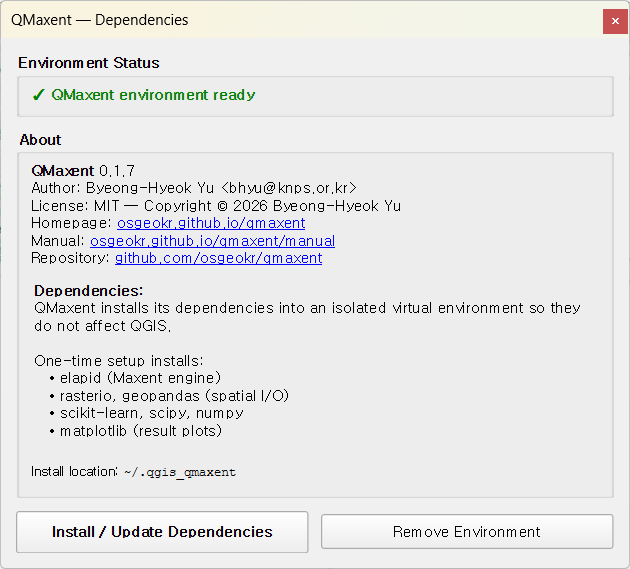
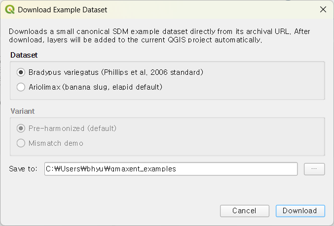
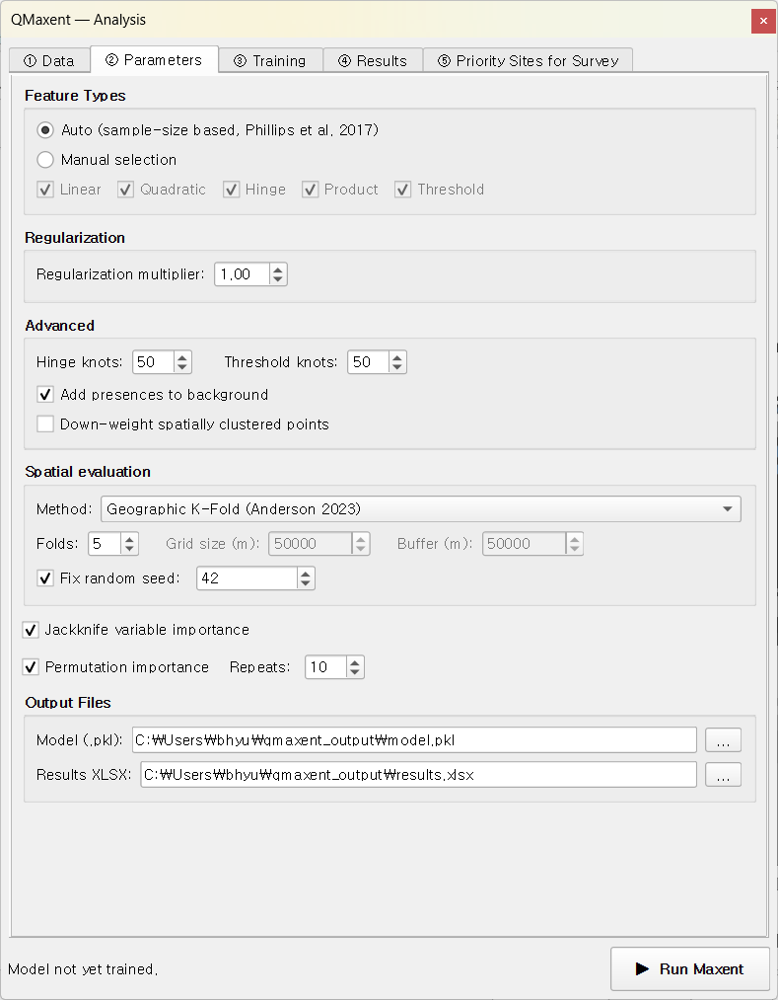
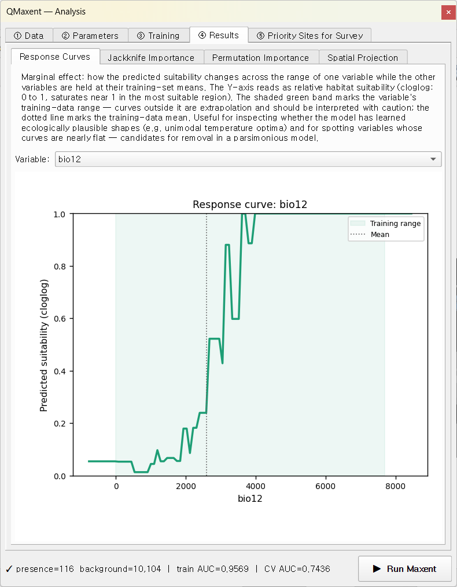
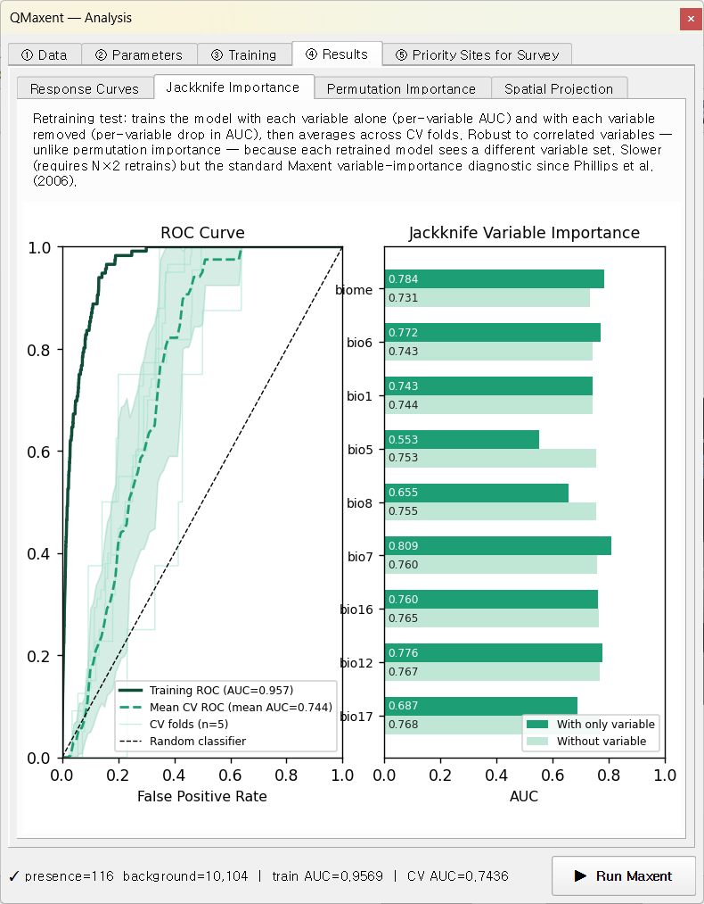
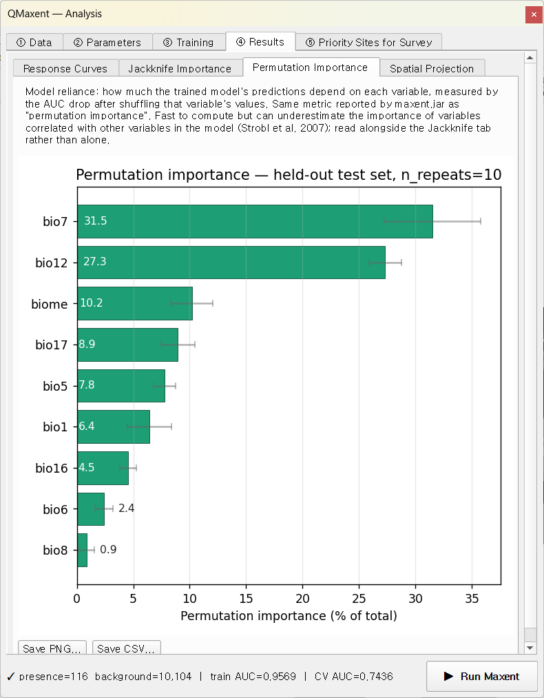
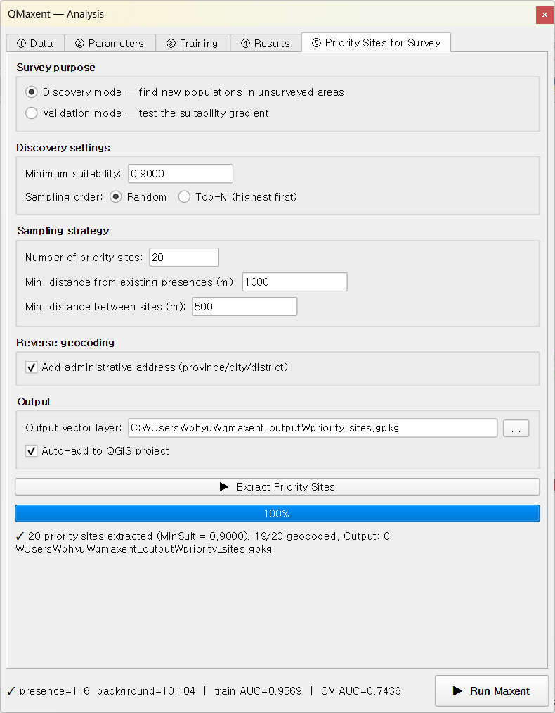
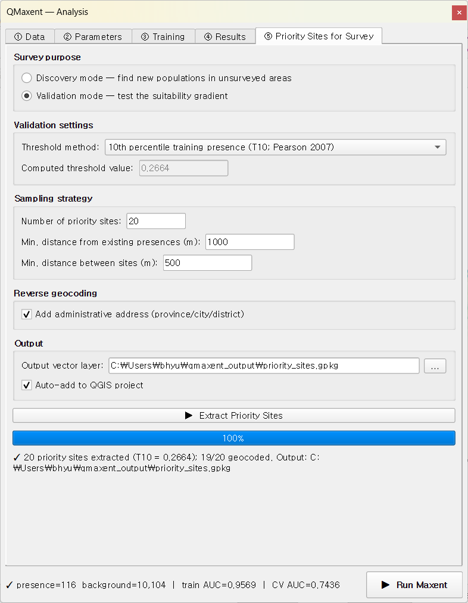
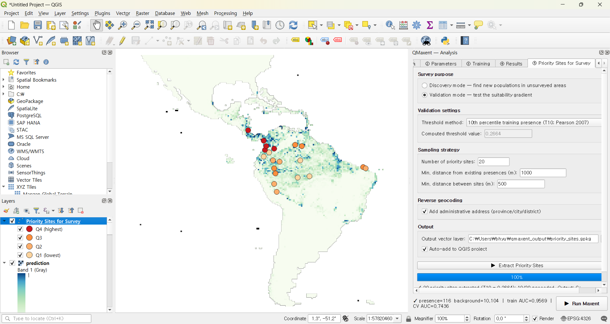

Bradypus variegatus¶
세발가락나무늘보 Bradypus variegatus는 Phillips, Anderson & Schapire 2006이 처음 공개한 이후 거의 모든 Maxent 논문이 검증용으로 재사용해 온 Maxent의 표준 시연 자료입니다. 이 장에서는 이 자료를 가지고 QMaxent의 모든 기능을 차례로 거쳐 가는 가이드 투어를 진행합니다 — 의존성 설치, 자료 적재, 매개변수 선택, 공간 교차검증, 잭나이프 및 치환 변수 중요도, 투영, 그리고 조사 계획까지. 마지막 단계까지 따라가시면 학술적으로 방어 가능한 한 편의 Bradypus 서식지 적합도 모델을 직접 산출하시게 됩니다.
0. 시작 전에 — 의존성¶
QMaxent는 사용하는 Python 라이브러리(elapid, rasterio, geopandas, scikit-learn, scipy, numpy, matplotlib)를 QGIS의 시스템 Python과 분리 되는 가상환경(venv) 안에 설치합니다. 플러그인을 처음 실행할 때 일회성 설치 다이얼로그가 열립니다.

Install / Update Dependencies 버튼을 누르면 pip 4단계(collecting, downloading, building, installing) 진행률이 표시되고, 완료되면 아래와 같이 녹색 배지로 바뀝니다 — 이 시점에서 QMaxent의 모든 기능이 사용 가능합니다.

QGIS 메이저 버전 업그레이드 등으로 venv를 다시 만들고 싶다면 같은 다이얼로그의 Remove Environment 버튼을 누르면 깨끗하게 초기화할 수 있습니다.
1. 자료¶
Phillips et al. (2006) 자료는 다음을 포함합니다.
| 레이어 | 타입 | 설명 |
|---|---|---|
bradypus |
벡터 점 | 남·중미 전역의 출현 기록 116점 |
bio1, bio5, bio6, bio7, bio8 |
연속 래스터 | 기온 변수 (WorldClim) |
bio12, bio16, bio17 |
연속 래스터 | 강수 변수 (WorldClim) |
biome |
범주형 래스터 | 생물군계 유형 (Olson et al. 2001) |
모든 래스터가 동일한 격자를 공유합니다 — EPSG:4326, 0.5°×0.5° 셀, 미주 대륙 전체 범위. 총 자료 크기는 100 MB 이내입니다.
Plugins → QMaxent → Download Example Dataset에서 Bradypus variegatus (Phillips et al, 2006 standard)을 선택하고 저장 폴더를 지정한 뒤 Download를 누릅니다.

레이어가 자동으로 QGIS 프로젝트에 추가됩니다.

2. Analysis 도크에 자료 적재¶
Plugins → QMaxent → QMaxent Analysis를 엽니다. ① Data 탭의
Presence Points Layer 드롭다운에서 bradypus를 선택하면 즉시
116 presence points loaded가 표시됩니다.
Add from project를 누르면 프로젝트에 로드된 모든 래스터가 한꺼번에
등록됩니다. biome 행에는 사이드카 메타데이터에 따라 [categorical]
태그가 자동 부착됩니다. Check Raster Consistency를 누르면 격자
정합 상태가 검증됩니다. 본 자료의 경우 상태 줄에
✓ All 9 rasters share grid (CRS: EPSG:4326, resolution: 0.5 × 0.5)
가 표시됩니다.

Background Points는 기본값 10,000을 그대로 유지합니다. 이는 대륙 규모 연구에 대해 Phillips & Dudík 2008이 권장한 표본 수입니다. 하단의 Export for external Maxent 패널은 이 튜토리얼에서는 사용하지 않습니다. 사용 시점은 결과 내보내기를 참고하세요.
3. 모델 설정¶
② Parameters로 이동합니다. 이 가이드 투어에서는 모든 기본값을 그대로 받아 사용합니다. 각 기본값이 학술적 권장치이므로 그 선택이 어떤 결과를 만드는지 확인하는 데 가장 적합한 출발점입니다.

- Feature Types: Auto. Phillips & Dudík 2008의 maxnet 자동 규칙은 출현점 116개에 대해 LQPHT 전체를 선택합니다.
- Regularization multiplier: 1.0 (Phillips & Dudík 2008 권장).
- Spatial evaluation: Geographic K-Fold (Anderson 2023), 5-fold, grid 50,000 m, buffer 50,000 m, 고정 random seed = 42 (Roberts et al. 2017 기본값).
- Jackknife variable importance: 활성화.
- Permutation importance: 활성화, 반복 10회.
- Output Files:
qmaxent_output/model.pkl및qmaxent_output/results.xlsx.
고정 random seed는 이 튜토리얼을 따라 하시는 모든 분이 비트 단위로 동일한 결과를 얻도록 보장합니다 — Araújo et al. 2019이 강조하는 계산 재현성의 핵심 요건입니다.
4. 학습 + 교차검증 실행¶
▶ Run Maxent를 누릅니다. ③ Training 탭이 활성화되고 약 30초 내에 모든 단계가 완료됩니다.

탭 하단의 상태 줄에 요약이 표시됩니다 —
presence=116 background=10,104 | train AUC=0.9569 | CV AUC=0.7436.
로그를 위에서 아래로 읽어 보면 다음 단계로 구성되어 있습니다.
- Full-data model —
Training AUC = 0.9569(모델은qmaxent_output/model.pkl로 저장). - Cross-validation — Geographic K-Fold n=5, seed=42:
| Fold | 검증 출현점 수 | AUC |
|---|---|---|
| 1 | 58 | 0.7779 |
| 2 | 20 | 0.7711 |
| 3 | 22 | 0.7531 |
| 4 | 8 | 0.5994 |
| 5 | 8 | 0.8165 |
통합 평균 ± 표준편차 = 0.7436 ± 0.0750.
- Jackknife variable importance — 동일한 5개 fold를 대상으로 세 가지 모드(전체 모델 기준선, 해당 변수만, 해당 변수 제외)의 AUC를 변수별로 산출합니다.
- Permutation importance — scikit-learn의
permutation_importance,n_repeats=10, 검증 세트에서 평가. 결과는 ④ Results의 Permutation Importance 하위 탭에 표시됩니다. - Save results —
results.xlsx와training_log.txt가.pkl옆에 자동 저장됩니다.
Train AUC 0.957 vs. CV AUC 0.744 ± 0.075. 그 차이는 공간적으로 분리된 검증 세트를 따로 떼어 두는 정직한 평가의 대가입니다 — 부풀려진 학습 AUC만 보지 말고 일반화 성능까지 함께 봐야 한다는 Roberts et al. 2017의 권고와 정확히 부합합니다.
Fold 4와 5는 가장 작은 검증 세트(각 8개)를 가지며 AUC 변동성도 큽니다. 공간 CV에서는 의도적으로 fold 면적이 균일하지 않아 한 fold가 작고 비전형적인 지역에 떨어질 수 있습니다. 통합 CV AUC는 이러한 변동성을 평균화합니다 — ± 0.075 표준편차는 출판물에서 평균과 함께 반드시 인용해야 할 값입니다.
탭 하단의 Save log as… 버튼으로 전체 로그를 텍스트 파일로 저장할 수 있고, Copy log는 같은 내용을 클립보드에 복사합니다(이슈 보고 시 그대로 붙여넣기 좋습니다).
5. 변수 행동 살펴보기¶
반응 곡선 (Response curves)¶
④ Results → Response Curves에서 bio12(연강수량)를 선택합니다.

연강수량 1,500–3,500 mm 구간에 적합도가 가장 높게 할당되어 있습니다 — 이는 남미 열대 우림 기후대에 해당합니다. 약 800 mm 이하부터는 적합도가 급격히 떨어지며, 곡선 모양은 hinge와 quadratic 피처의 결합입니다. 다른 변수를 드롭다운에서 시도해 보면 부드러운 U자·정점형 곡선은 quadratic 계열, 각진 불연속점은 hinge·threshold 피처에서 비롯됨을 확인할 수 있습니다.
잭나이프 중요도 (Jackknife)¶
Jackknife Importance 하위 탭은 각 변수의 단독 신호와 누락 시 손실을 나란히 비교합니다. 짙은 막대(Only this variable)와 옅은 막대 (Without this variable)가 각 변수의 고유 기여도를 알려 줍니다.

Bradypus의 경우:
bio7(연 기온 진폭)과bio12(연강수량)가 가장 강한 단독 신호를 가집니다.biome과bio6(가장 추운 달 최저기온)이 그 다음입니다.- "without" 막대들이 모두 0.95 부근에 몰려 있는 것은 어느 한 변수를 제거해도 다른 상관 기후 변수가 보완하기 때문입니다 — 이는 Phillips, Anderson & Schapire 2006에서 묘사한 교과서적 패턴입니다.
치환 중요도 (Permutation importance)¶
Permutation Importance 하위 탭은 같은 질문에 다른 방식으로
답합니다. scikit-learn의 permutation_importance는 검증 세트에서
각 변수의 값을 무작위로 섞고, AUC 하락을 측정하고, 10회 반복 평균을
전체 합 100%로 정규화합니다.

여기서도 bio7과 bio12가 우세합니다. Permutation 관점은 전체 중요도를
모든 변수에 분배하므로 maxent.jar의 변수별 percentage 표와 직접 비교
가능한 형태로 제공됩니다.
6. 공간 투영 (Spatial projection)¶
같은 Results 탭의 Spatial Projection 하위 탭으로 이동합니다. 출력 변환은 cloglog(이는 Phillips et al. 2017이 권장하는 기본값)을 그대로 두고 Auto-load result as QGIS layer도 체크된 상태로 ▶ Run Spatial Projection을 누릅니다.

자동 스타일(흰색 → 녹색 ramp)이 적용된 지도가 QGIS 캔버스에 추가됩니다.

높은 적합도 핵심 지역은 브라질 남동 대서양림과 아마존 분지에 분포 — 나무늘보의 잘 알려진 서식 본거지와 일치합니다. 중미에도 보조적인 적합 구역이 분포합니다. 모델은 안데스 산맥의 한랭 고지대와 매우 건조한 브라질 동북 카아팅가 지역을 정확히 부적합으로 판정합니다.
7. 결과물 저장¶
자동으로 두 개의 파일이 저장되었습니다.
qmaxent_output/model.pkl— 학습된 모델의 직렬화 산출물. Data 탭의 Load existing model (.pkl)… 버튼으로 나중에 다시 불러올 수 있고, 협업자에게 공유할 수도 있습니다. 보안 주의 사항은 모델 저장 및 재사용을 참고하세요.qmaxent_output/results.xlsx— 실험 설정, 변수 목록, CV 결과, 잭나이프, 치환 중요도, 반응 곡선 변곡점, 임계값 등을 시트별로 정리한 다중 시트 표. 시트 구성은 결과 내보내기를 참고하세요.
투영 실행 전에 Save analysis charts as PNG를 체크해 두셨다면 반응 곡선·ROC·잭나이프·치환 중요도 4개의 300 dpi PNG가 GeoTIFF 옆에 함께 저장됩니다. 출판물 단일 칼럼 그림용으로 바로 붙여넣을 수 있는 크기로 출력됩니다.
8. 우선조사 후보지 (Priority Sites for Survey)¶
학습된 모델을 곧바로 활용해 후속 조사 계획을 세우는 단계입니다. ⑤ Priority Sites for Survey 탭은 서로 다른 두 가지 모드를 제공합니다 — Discovery(새 개체군 발견)와 Validation(적합도 구간별 층화 검증).
8.1 Discovery 모드¶
Discovery는 높은 적합도 구간에서 후보를 추출합니다. 탭을 열고 모드를
Discovery 유지, 자동 설정된 최소 적합도(~0.81)를 그대로, n_sites = 20,
1 km / 500 m 간격 기본값으로 두고 ▶ Extract Priority Sites를 누릅니다.

20개 후보지(빨간 점)가 적합도 지도 위에 추출되고, attribute table에는 Nominatim 역지오코딩으로 행정 정보가 자동 부착됩니다.

각 후보는 기존 출현점에서 최소 1 km, 다른 후보에서 최소 500 m 이상 떨어져 있어 한 차례 출장에서 여러 곳을 합리적으로 방문할 수 있게 배치됩니다. Discovery는 "종이 있을 수 있지만 우리가 아직 가 보지 않은 곳은 어디인가?"라는 질문에 답하는 모드로, Rhoden et al. 2017의 "Maxent-directed surveys" 패러다임에 정확히 대응합니다.
8.2 Validation 모드¶
모드를 Validation로 바꾸면 다른 표집을 수행합니다 — 임계값 이상의 적합도 셀을 4개 분위로 층화하여 각 분위에서 균등하게 후보를 뽑습니다. 이렇게 하면 한 번의 현장 출장으로 모델의 보정(calibration)을 적합도 전 구간에서 검증할 수 있습니다.

산출된 후보지는 저적합도부터 고적합도까지 대략 균등 분포하며, attribute table에는 각 후보의 분위 정보가 부착됩니다.

Validation은 새로운 개체군 발견보다 모델 검증에 적합한 모드로, § 4에서 계산한 교차검증 AUC의 현장 측 보완 절차에 해당합니다.
다음 단계¶
- 격자가 정합되지 않은 자료로 동일한 워크플로우: Ariolimax 예제는 CRS · 해상도가 서로 다른 래스터에서 출발하여 Check + Harmonize 도구를 실습합니다.
- 출판된 연구와의 워크플로우 비교: Pitta nympha 예제는 출판된 Java MaxEnt 분석을 QMaxent로 재현하고 두 파이프라인이 일치 · 불일치하는 지점을 논의합니다.
- 이론적 배경: 방법론 해설에서 이 가이드 투어가 받아 사용한 각 기본값이 왜 합리적인 선택인지 설명합니다.